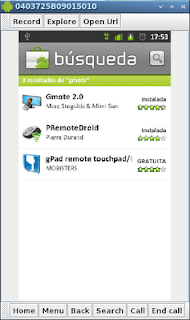

Manejar remotamente un equipo con Debian desde Android con gmote
Posted on Fri 08 April 2011 in Demostración Aplicación para Android • 1 min read
Gmote es una aplicación hecha en java que permite controlar el ratón y el teclado.
El enlace de gmote es esta aquí .

Para instalarlo en android se busca en el market gmote y ahí se consigue como lo muestra la figura.

Al tenerlo instalado en el android sólo falta bajar la aplicación para Linux en el siguiente enlace.
Al descomprimir el archivo se ejecuta GmoteServer.sh.
Se configura el acceso a wifi del Android.
En el equipo con Android se busca en las aplicaciones y se ejecuta gmote.
Aparece la parte de control de reproductor de música se presione menú en el celular y aparece entre las opciones Touchpad.
Al presionar TouchPad ya se tiene control del ratón en el computador.
Al darle clip al símbolo del teclado nos permite escribir remotamente en el computador.
Esta opción de gmote es útil para manejar presentaciones de forma remota.
===
¡Haz tu donativo! Si te gustó el artículo puedes realizar un donativo con Bitcoin (BTC) usando la billetera digital de tu preferencia a la siguiente dirección: 17MtNybhdkA9GV3UNS6BTwPcuhjXoPrSzV
O Escaneando el código QR desde billetera: